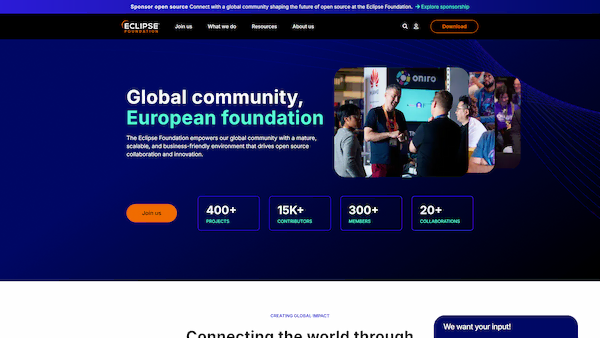
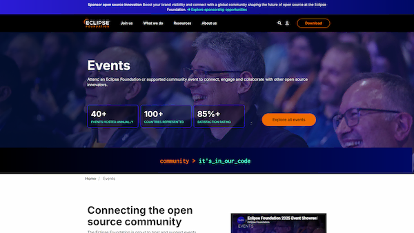
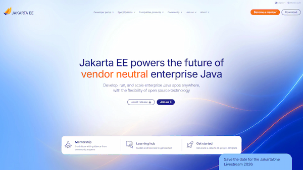
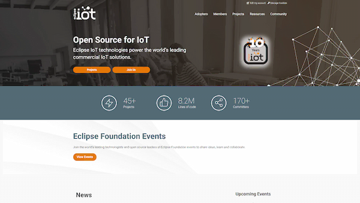
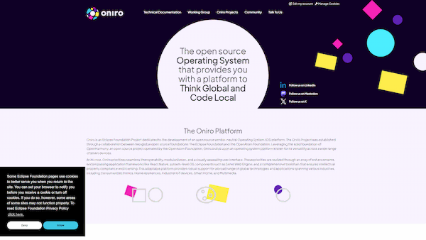

This site documents the Hugo Solstice theme used on Eclipse Foundation sites. It includes a styleguide describing component usage, sample pages, and a reference for every configuration the theme exposes.
The Hugo Solstice theme is available under the Eclipse Public License, v2. It is maintained by the software development team at Eclipse Foundation and, like other Eclipse Foundation projects, is open to community input and development.
Shortcodes and partials for cards, events, FAQs, members, news, and more.
Per-page parameters that override site defaults: metadata, layout, jumbotron, and more.
Site-wide defaults set in config.toml: call-to-action, integrations, resources.
Sample pages and layouts demonstrating the theme's features and breakpoints.
Release notes and version history for the Hugo Solstice theme.
Source code, issues, and merge requests on Eclipse Foundation GitLab.
Sites across the Eclipse Foundation ecosystem built with the Hugo Solstice theme.





…and many more across the Eclipse Foundation.